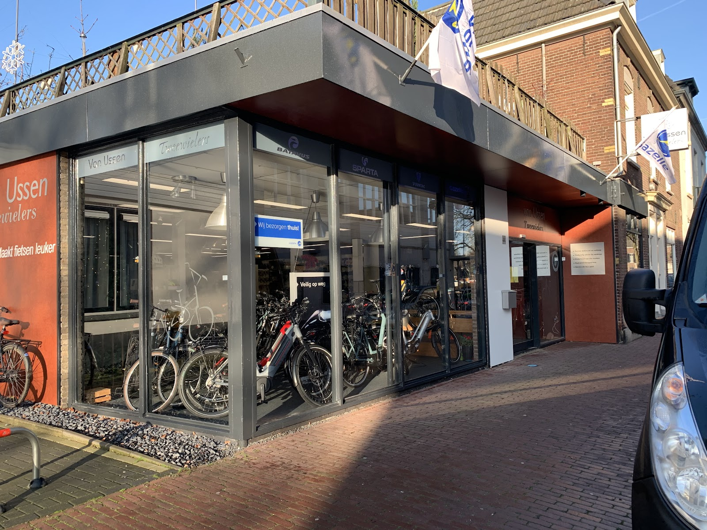
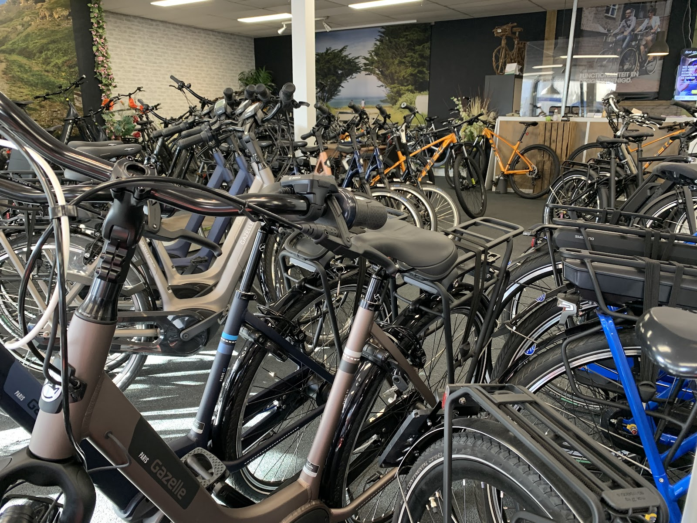
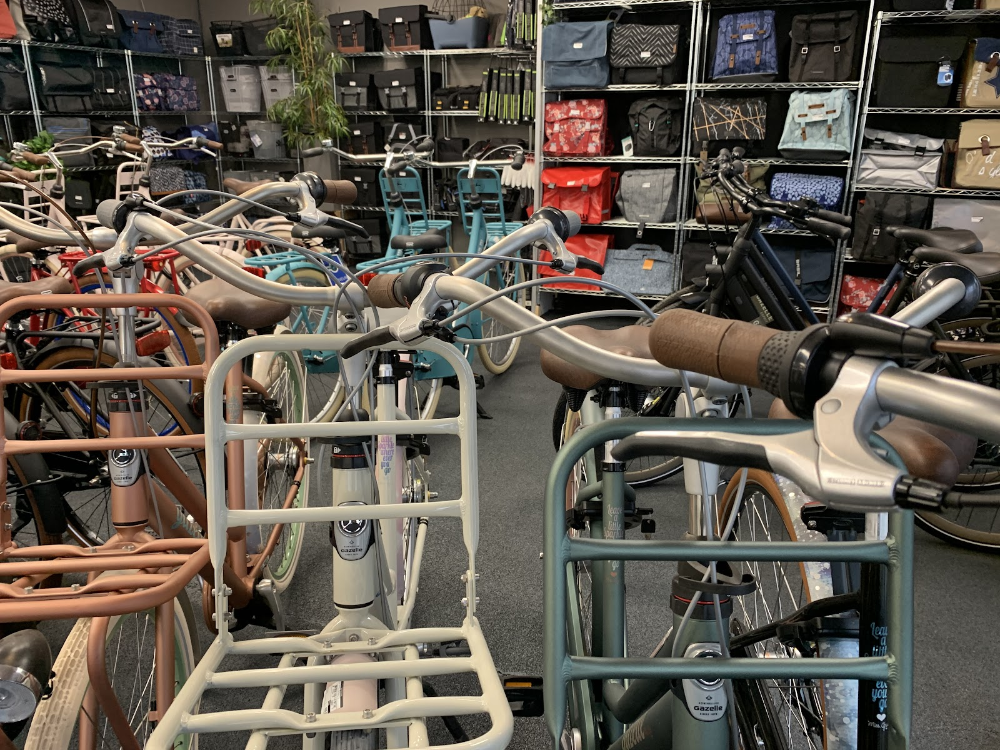
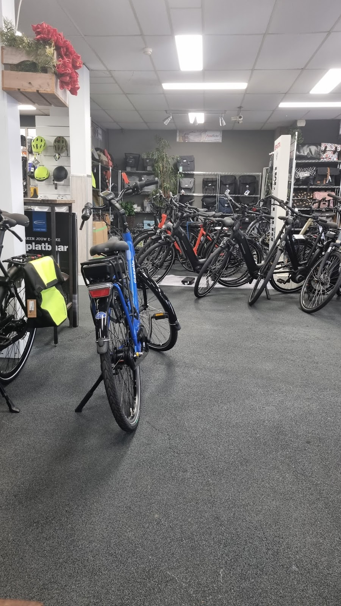
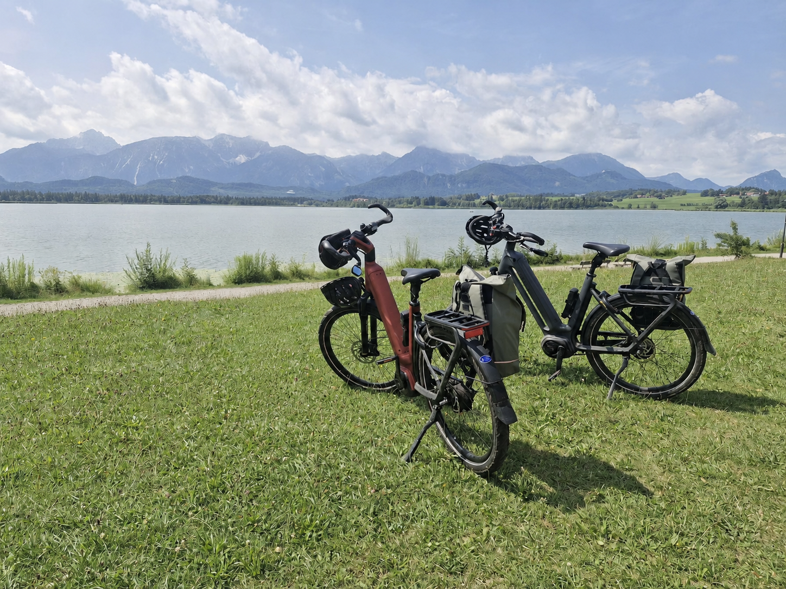
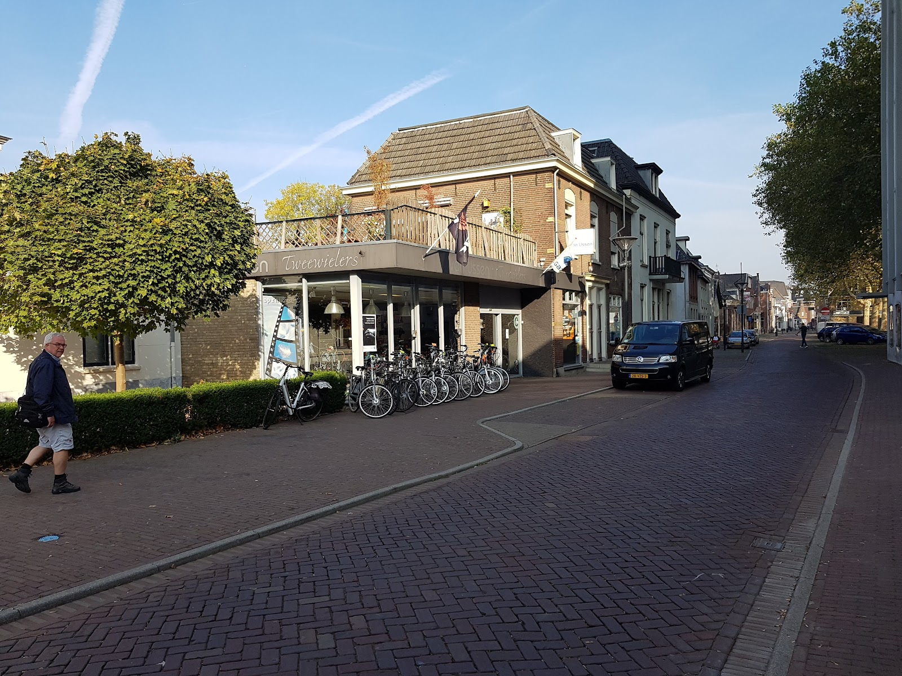

Fietsenwinkel en werkplaats in Zevenaar
Eerst proefrijden, dan pas kiezen.
Op de Kerkstraat helpen we u aan de fiets die écht bij u past. Met eerlijk advies, een gratis proefrit en rijklaar afgeleverd.
4,5 uit 170 Google-reviews


Een fiets koopt u niet van een foto.
Daarom zit u bij ons eerst even op het zadel. We kijken samen naar hoe en waar u fietst, en pas dan naar het model.
- Deskundig advies Bij de aanschaf denken we mee over wat u nodig heeft, niet over wat het meeste oplevert.
- Gratis proefrit Stap op en rij een rondje. Zo merkt u meteen of de fiets goed zit.
- Rijklaar afgeleverd Afgesteld en gecontroleerd, zodat u direct kunt fietsen.
- Service na verkoop Ook na de aankoop blijft u welkom voor onderhoud en reparatie.
- Verzekeren Uw nieuwe fiets verzekeren is mogelijk. We adviseren u graag.
- Erkend premium dealer Van Gazelle, Trek, Sparta en Batavus.
Van kinderfiets tot bakfiets.
In de winkel staan nieuwe en gebruikte fietsen voor het hele gezin. Ook voor fietstassen en helmen kunt u bij ons terecht.
Erkend premium dealer van
Gazelle, Trek, Sparta en Batavus
- Elektrische fietsen Gazelle, Trek, Sparta
- Stadsfietsen voor elke dag
- Kinderfietsen Loekie, Trek, Alpina
- Transportfietsen met krat of drager
- Bakfietsen en longtails voor vervoer en gezin
-
Fiets van de zaak?
Via Lease a Bike kunt u bij ons ook een fiets leasen. Vraag in de winkel hoe het werkt.


Fiets kapot? Wij halen hem op.
In onze eigen werkplaats doen we onderhoud en reparatie. Lukt het niet om langs te komen? Dan halen we de fiets gratis bij u thuis op en brengen we hem weer terug.
Bel voor een afspraak0316 523 296, dinsdag tot en met zaterdag
Veilig de winter door
Het slechte weer komt er weer aan. Laat uw fiets daar goed op voorbereiden: denk aan de remmen, de banden en de verlichting.
Fietst u in de winter niet? Dan is dit juist een goed moment voor een onderhoudsbeurt, zodat u in het voorjaar weer zonder zorgen op pad kunt.
- Onderhoud en reparatie
- Remmen, banden, verlichting en de complete beurt.
- Gratis haal- en brengservice
- Wij halen op en brengen terug, zonder kosten.

500 km van de Bodensee naar de Königssee
Waar onze fietsen naartoe gaan.
“Al ruim 2 jaar de trotse eigenaars van 2 prachtige robuuste Eclipse C380 uiteraard gekocht bij van Ussen tweewielers. Afgelopen week de fietstocht Bodensee - Königssee in Beieren gefietst een tocht van 500 km. Onze fietsen kunnen dit met gemak aan. De variabele versnelling en de brede robuuste banden fietsen met gemak”
“Hier in Juni een tweedehands Gazelle ebike gekocht voor mijn dochter. Ondanks een periode van meerdere jaren wordt je nog herkend. Het advies is duidelijk en helder, er wordt ingespeeld op de behoefte van de klant en niet op de marge van de ondernemer. Er wordt vertrouwen gegeven en een snelle aflevering.”
Gemiddeld 4,5 sterren uit 170 reviews op Google.
Kom gerust even langs op de Kerkstraat.
Openingstijden
| Maandag | Gesloten |
| Dinsdag | 9.00 - 18.00 |
| Woensdag | 9.00 - 18.00 |
| Donderdag | 9.00 - 18.00 |
| Vrijdag | 9.00 - 18.00 |
| Zaterdag | 9.00 - 17.00 |
| Zondag | Gesloten |
